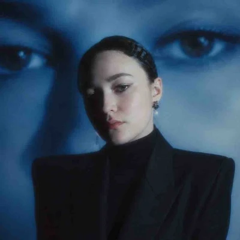

Михайлова Софья
Диджитал- и графический дизайнер · 6 лет опыта
- Figma
- Photoshop
- Illustrator
- InDesign
- Lightroom
- Acrobat
- Procreate
- PowerPoint
- Keynote
- Google Slides
- ChatGPT
- Gemini
- CapCut
- ИИ-инструменты
Работаю с визуальными коммуникациями для медиа, нативной рекламы, городских проектов, коммерческих материалов и событий. Помогаю проектам выглядеть цельно и понятно на разных носителях: в соцсетях, презентациях, лендингах, печати, мерче и оформлении мероприятий
Работаю с дизайном системно: выстраиваю визуальные принципы, шаблоны, компоненты и правила оформления, которые помогают быстрее масштабировать дизайн на разные форматы и каналы. Сильная сторона — структурировать сложную информацию и превращать её в понятные визуальные материалы. Есть опыт работы с командами, координации дизайнеров и самостоятельного ведения клиентских проектов: от брифа и концепции до финальных макетов
01. Ключевые результаты
02. Городские медиа / Native Lab
Медиа-компания с сетью городских тг-каналов и направлением нативной рекламы. Отвечала за digital- и графический дизайн: визуальную систему каналов, контентные форматы, коммерческие презентации, партнёрские материалы и визуальную упаковку рекламных проектов
01 / Визуальная система и контент-дизайн для сети городских тг-каналов
Задача: У каналов были разные визуальные подходы: контент выглядел неоднородно, а регулярные публикации требовали много ручной работы. Нужно было унифицировать язык, ускорить производство и сохранить гибкость для разных городов, рубрик и площадок
Результат
- разработала систему шаблонов и визуальных правил для сети из 11+ городских тг-каналов
- работала с визуальным контентом для 3 активных каналов с аудиторией 450 000+ подписчиков (на период работы)
- TTM −15% за счёт шаблонов, сеток и переиспользуемых компонентов
- упростила адаптацию визуальных решений под разные города, рубрики, соцсети и рекламные форматы
Что делала: шаблоны, сетки, графические элементы и правила оформления; адаптация под тг, Instagram, TikTok и YouTube; библиотека переиспользуемых компонентов; графика для соцсетей, включая концепции маскотов с ИИ и дизайнерской доработкой; координация дизайнера по контентному направлению
02 / Коммерческие и партнёрские материалы Native Lab
Задача: Коммерческие материалы собирались в разных стилях и структурах: презентации дольше готовились, проходили больше раундов правок и хуже адаптировались под клиентов, рекламодателей, партнёров и тендеры
Результат
- разработала и оформила 30+ коммерческих презентаций для рекламных, партнёрских и тендерных задач
- сократила TTM подготовки коммерческих материалов на 30–50% за счёт единой структуры, шаблонов и переиспользуемых компонентов
- стандартизировала 5 типов материалов: КП, презентации спецпроектов, партнёрские предложения, кейс-презентации и тендерные презентации
- упростила подготовку новых презентаций за счёт модульной структуры и библиотеки слайдов
Что делала: пересобрала структуру презентаций и партнёрских материалов; внедрила единую иерархию, сетку, типографику и стиль подачи; разработала шаблоны и компоненты для быстрой сборки; оформила материалы для рекламных, нативных и партнёрских проектов
03. ФГБУ ВНИИИМТ Росздравнадзора
Визуальная упаковка научных и отраслевых проектов института: презентации, инфографика, материалы для мероприятий, сайта и тг-канала
Визуальная упаковка научных и отраслевых материалов
Задача: Научные и технические материалы содержали много сложной информации, которую нужно было адаптировать для руководства, экспертов, государственных структур и партнёров: сделать подачу структурной, единой и понятной без потери смысла
Результат
- подготовила 5+ презентаций для руководства, профильных конференций и отраслевых мероприятий российского и международного уровня
- оформила материалы для 4 направлений коммуникации: презентации, тг-канал, сайт и отраслевые мероприятия
Что делала: пересобирала структуру презентаций: логика подачи, иерархия, акценты; визуализировала научные и технические данные через схемы, таблицы и инфографику; разработала набор шаблонов слайдов; обновила визуальную подачу тг-канала — читаемость, структура, консистентность; координировала дизайнера по материалам для соцсетей
04. Молодёжное сообщество «СТОлица»
Визуальные коммуникации городских и молодёжных проектов Москвы: лендинги, интерфейсные макеты, фирменные стили, презентации, мерч, полиграфия, материалы для соцсетей и брендирование мероприятий
01 / Лагерь «Молодёжь Москвы. Столица. Лето»
Задача: Проект включал много информации: смены, условия участия, этапы отбора, личное участие, общение с участниками. Нужно было структурировать её, упростить навигацию и собрать визуальную систему для digital и offline
Результат
- собрала понятную структуру проекта для аудитории 3 000+ участников за сезон
- упростила навигацию по тематическим сменам: на каждую приезжало около 350 участников
- подготовила макеты лендинга и кабинета участника к передаче в разработку, включая анимированную демонстрацию сценариев
- объединила digital- и offline-материалы проекта в единый визуальный стиль
- адаптировала решения под разные точки контакта: лендинг, кабинет, презентации, соцсети и материалы для участников
Что делала: спроектировала структуру лендинга; пересобрала информационную архитектуру; разработала интерфейсные макеты кабинета участника и анимацию, показывающую логику экранов и переходов; подготовила макеты и материалы к передаче разработчикам
02 / Городские мероприятия Москвы
Среди проектов: День молодёжи в Москве, автопробег ко Дню Государственного флага РФ, предновогодний автопробег, образовательные и молодёжные проекты города
Задача: Мероприятия отличались по теме, формату и задачам коммуникации, и под каждое нужна была своя визуальная концепция. Дизайн для разных носителей нужно было делать быстро, с учётом сроков, требований печати, производства и подрядчиков
Результат
- обеспечила визуальное сопровождение 15+ городских, образовательных и молодёжных проектов Москвы
- адаптировала решения под 7+ типов носителей: соцсети, презентации, лендинги, мерч, полиграфию, навигацию и брендирование площадок
- подготовила 7+ линеек фирменного мерча и раздаточных материалов к производству
- выстроила единый визуальный язык: анонсы, презентации, соцсети, мерч, навигация и оформление площадок воспринимались как цельная система
- расширила визуальный язык сообщества через маскота и тг-стикеры
Что делала: фирменные стили и концепции для мероприятий; презентации, афиши, материалы для соцсетей, навигация и полиграфия; макеты для публикации, печати, производства и оформления пространств; маскот молодёжного сообщества и тг-стикеры
05. Студенческий союз МИРЭА
Образовательные, интеллектуальные и культурно-массовые проекты университета. Отвечала за визуальные коммуникации мероприятий, фирменный стиль проектов, координацию медиа-команд и производство контента
01 / КВН РТУ МИРЭА
Задача: Нужно было медийное сопровождение в течение сезона — регулярные публикации, фото, видео, оформление мероприятий — при координации команды и едином визуальном стиле
Результат
- обеспечила выпуск 100+ публикаций, 35+ видеороликов и 2 000+ фотографий
- аудитория проекта выросла на 600+ подписчиков за сезон
- медиа-команда работала системно: с контент-планом, визуальным стилем и регулярным выпуском материалов
Что делала: координировала медиа-команду до 8 человек; разработала логотип проекта; координировала разработку визуального стиля; формировала контент-план и контролировала выпуск материалов
02 / Интеллектуальный турнир «Дебаты»
Задача: Мероприятию нужна была цельная визуальная система и комплект материалов для анонса, регистрации, проведения, награждения и общения с участниками — понятный, единый и пригодный для повторного использования
Результат
- разработала визуальную систему мероприятия для 155 участников
- подготовила комплект: афиши, презентации, приглашения, грамоты, чек-листы, сувениры и элементы брендирования
- сформировала принципы оформления, которые организаторы использовали в последующие годы
03 / Другие университетские проекты
Результат
- отвечала за медиа-направление Выпускного МИРЭА 2024
- разработала фирменные рабочие тетради для образовательного проекта «Учебные субботы»
- участвовала в работе Студенческого Медиацентра МИРЭА: видеоконтент, журнал, VK-сообщество и информационное сопровождение инициатив
Что делала: координировала команду, сроки и визуальное качество материалов; разрабатывала визуальные материалы для образовательных, культурных и студенческих проектов; создавала контент для соцсетей, видео, журнала, мероприятий и внутренних коммуникаций
06. Проектная деятельность
Работаю с коммерческими заказчиками из сфер недвижимости, кейтеринга, образования, услуг, малого бизнеса и событийных проектов. Веду проекты полного цикла: от брифа и визуальной концепции до финальных файлов для публикации, печати, производства или передачи в разработку
Коммерческие дизайн-проекты для клиентов
Результат
- реализовала проекты для заказчиков из 6+ отраслей
- самостоятельно вела коммуникацию с клиентами
- разрабатывала как отдельные носители, так и комплексные визуальные решения
- готовила финальные макеты для публикации, печати, производства и передачи в разработку
- получила опыт полного цикла: от брифа и концепции до финальной сдачи проекта
Что делала: лендинги, презентации и коммерческие предложения; фирменные стили, логотипы и визуальные концепции; буклеты, многостраничные издания, мерч и полиграфия; материалы для маркетплейсов и событийных проектов
Среди проектов: лендинг и презентация для кейтеринговой компании; коллекционное печатное издание для премиального жилого комплекса; айдентика для коммерческих организаций; материалы для событийных проектов и маркетплейсов
07. Образование и курсы
Образование
- 2025, магистр: МИРЭА — Российский технологический университет. ИПТИП, компьютерный дизайн
- 2023, бакалавр: МИРЭА — Российский технологический университет. Институт технологий управления, менеджмент (маркетинг)
Курсы
- 2026: SMM-Intensiv. LAVA Education: SMM, аналитика, KPI, контент-стратегия, Reels, съёмка и монтаж, законодательные ограничения в digital
- 2025: Стратегия продвижения бренда. Universal University
- 2023: Графический дизайн. GeekBrains
- 2023: Разработка веб-приложений. РТУ МИРЭА
- 2023: Профессиональная переподготовка «Менеджмент». РТУ МИРЭА
08. Навыки
Языки: русский — родной, английский — B1
Инструменты и навыки
- Figma
- Adobe Photoshop
- Adobe Illustrator
- Adobe InDesign
- Adobe Lightroom
- Adobe Acrobat
- Procreate
- MS PowerPoint
- Keynote
- Google Slides
- ИИ-инструменты
- ChatGPT
- Gemini
- CapCut
- графический дизайн
- веб-дизайн
- адаптивный дизайн
- прототипирование
- айдентика
- разработка фирменного стиля
- разработка брендбука
- разработка логотипов
- дизайн-концепции
- визуальные системы
- визуальные коммуникации
- дизайн полиграфии
- презентации
- инфографика
- мерч
- дизайн контента для соцсетей
- стилизация изображений
- анализ целевой аудитории
- организация работы сотрудников
- наставничество
- координация дизайнера